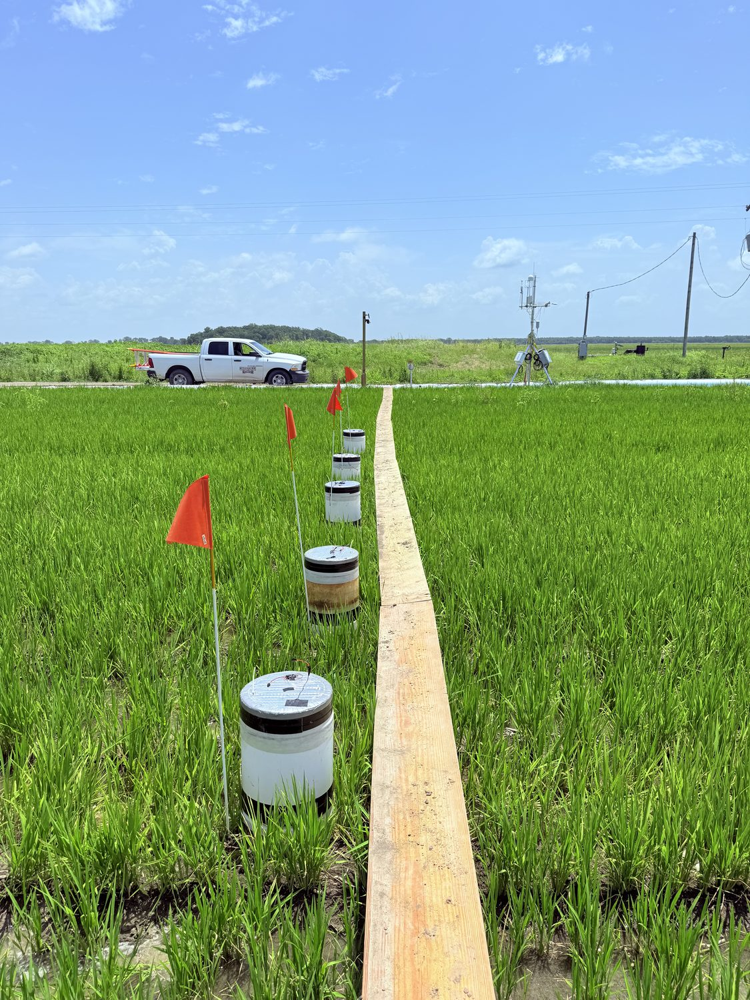
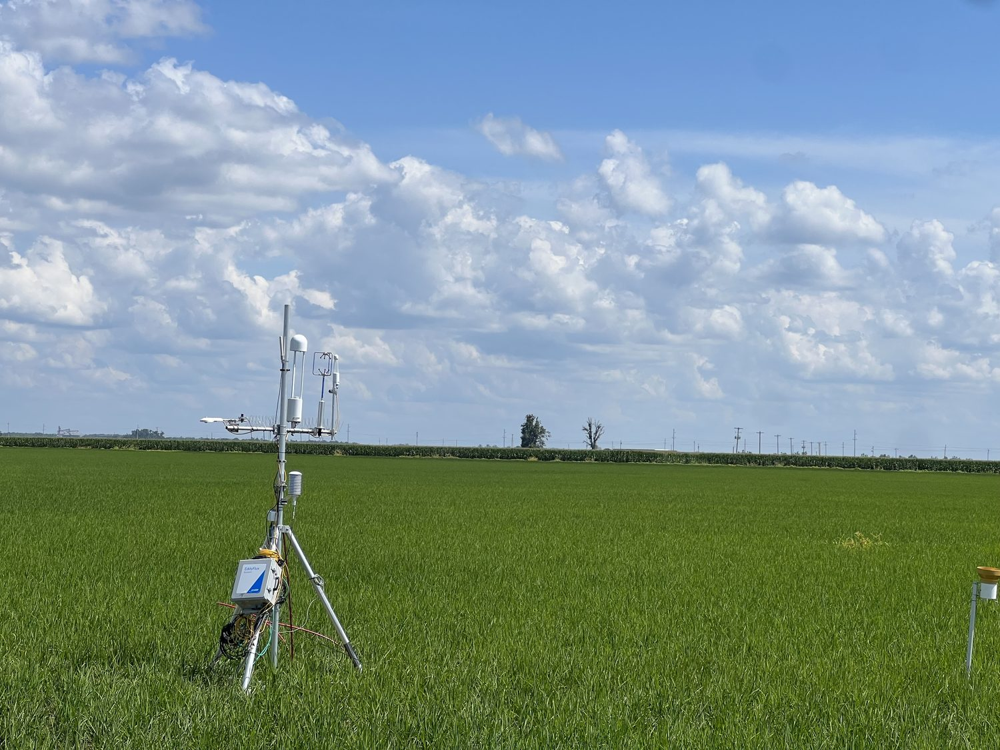
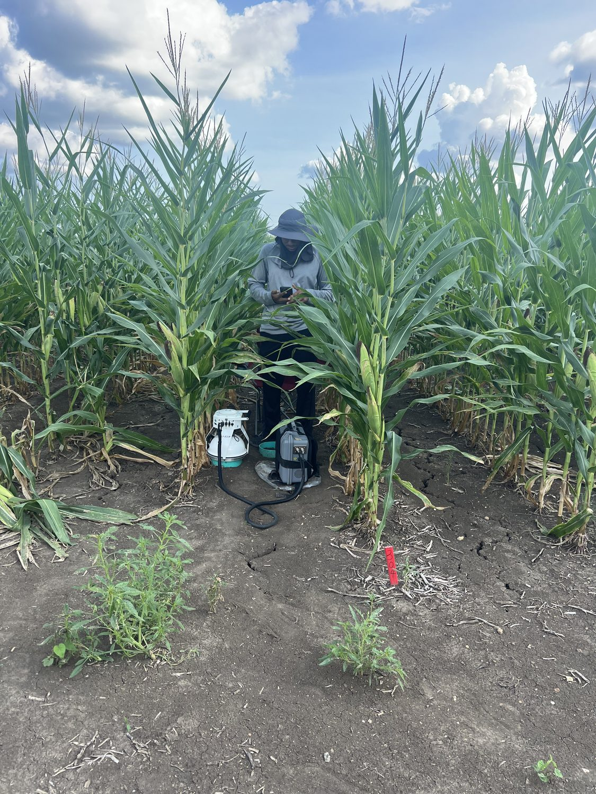
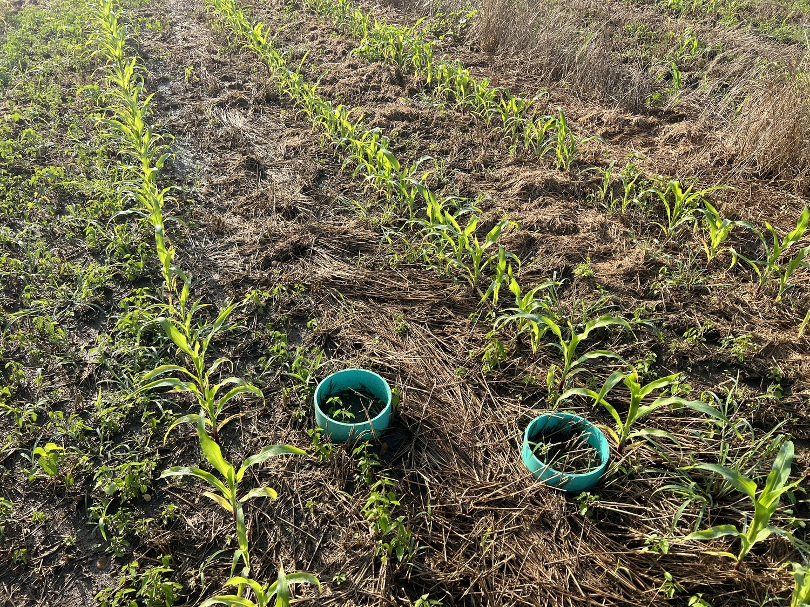
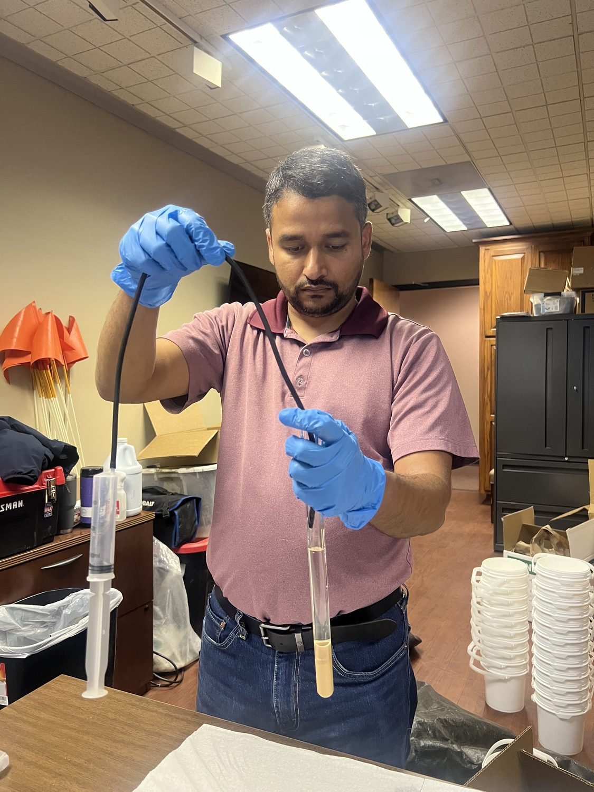

Mississippi State University · Water Resources Research Institute
Our active projects integrate field experiments, continuous flux monitoring, and process-based modeling to advance climate-smart, regenerative agriculture — improving soil health and water management while mitigating greenhouse gas emissions across rice and corn systems.

2023–2027 · USDA-NRCS (lab leads the Mississippi GHG objective) · with USDA-ARS, Jonesboro, AR
As part of the large USDA-NRCS project “How low can you go? Automating tailwater reuse in rice to reduce freshwater demand and greenhouse gas emissions,” the lab quantifies greenhouse gas emissions and global warming potential in continuously flooded versus end-blocked, tailwater-recirculating furrow-irrigated rice.
Using static flux chambers and six eddy covariance towers across paired farm sites near Belzoni and Isola, MS, the team measures methane, nitrous oxide, and carbon dioxide to relate emissions to grain yield and irrigation practice. Findings support development of a rice sub-model for the USDA COMET-Farm tool.

2025–Present · Mississippi State University (WRRI) · eddy covariance
This work evaluates how water-saving irrigation strategies — furrow irrigation and tailwater recirculation (alternate wetting and drying) — affect crop evapotranspiration, water-use efficiency, and ecosystem carbon and water exchange in row rice.
Six eddy covariance towers at farmer fields near Belzoni and Isola, MS continuously measure carbon dioxide, water vapor, and energy fluxes from planting to harvest. The project combines flux data with remote sensing to quantify and monitor the ecological footprint of U.S. rice production.

2024–Present · Mississippi State University (WRRI) · Brooksville, MS
This trial tests whether nitrogen fertilizer strategies that maximize nitrogen recovery in crop biomass can minimize direct nitrous oxide emissions in continuous corn.
Field experiments evaluate nitrogen rates, application depth, surface trench management, and a urease inhibitor (NBPT), with weekly to biweekly fluxes measured using trace-gas analyzers and smart chambers. Seasonal, yield-scaled emissions identify protected-fertility strategies that improve nitrogen-use efficiency while lowering the greenhouse gas footprint of corn.

2024–Present · Mississippi State University (WRRI) · Blackbelt region, MS
This project quantifies how conservation practices — no-till and cover cropping — reduce greenhouse gas emissions and build climate-smart corn systems for Mississippi's Blackbelt region.
A plot-scale split-plot trial at Brooksville, MS (two tillage systems by three cover-crop treatments) pairs weekly flux measurements with deep soil sampling to 1 m. Field data drive DAYCENT simulations of carbon and nitrogen transformations and global warming potential.

2025–2026 · ICL Growing Solutions
This study tests whether polysulfate-based soil amendments reduce methane production in flooded rice by limiting the acetate available to methane-producing bacteria.
Across three farmer fields in the Mississippi Delta, polysulfate-treated and control plots are compared; soils are analyzed for acetate and incubated to measure methane bursts by GC-MS at MSU's Hand Laboratories, linking a practical fertilizer amendment to the biochemical drivers of methane emissions.
2024–Present · Mississippi State University (WRRI) · Brooksville, MS
The lab is transitioning a 10-acre research plot to USDA organic certification to study regenerative practices in row crops. Current trials evaluate cover-crop termination timing and methods for organic corn–soybean rotations in a humid environment, generating agronomic insight and preliminary data to seed larger regional proposals.
2024–2029 · USDA-ARS Cooperative Agreement
This cooperative agreement identifies agronomic interventions for climate-smart agriculture by integrating remote sensing, cloud computing, machine learning, and big-data approaches with field agronomy and hydrologic modeling across Mississippi row-crop systems.